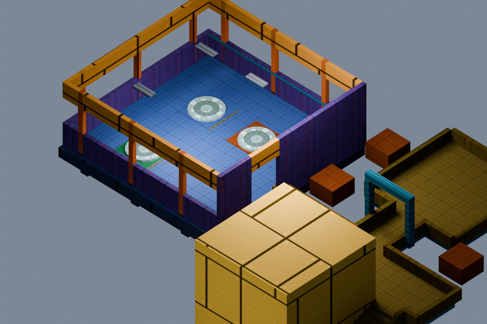
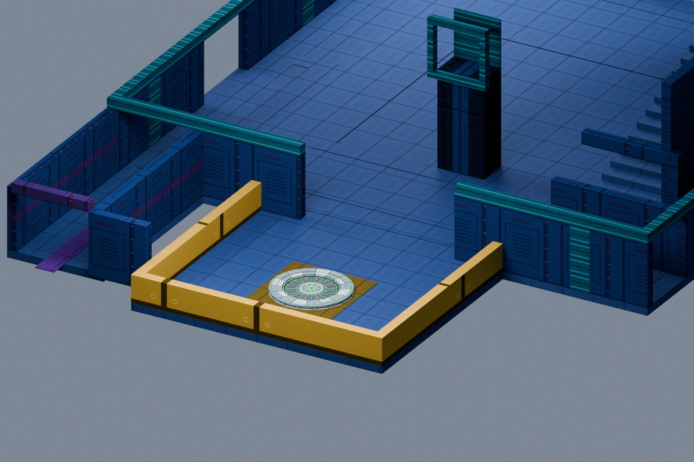

Crown materials / Broken descent
A way back to the top.
Full build and native navigation checks passed; ready for your playtest. Actual map geometry and shipped teleporter model, shown with Blender studio lighting. Native movement, lighting and travel await the user's playtest.
The jump pad lands on the main tower's top deck. The new bay opens off its terrace, with three floor links under a covered ceiling. Cobalt treads, violet panels and gold framing carry the crown's materials into the room. The newer arena pass replaces floor 40's regular link with its entry chamber.
 The top bay from its entrance. Each regular floor pad returns here.
The top bay from its entrance. Each regular floor pad returns here.
30 ↔ TOPOrange district · unlocks on reaching floor 30
20 ↔ TOPGreen district · unlocks on reaching floor 20
10 ↔ TOPBlue district · unlocks on reaching floor 10

Room-to-terrace connection. The ceiling is hidden in this view; its three fixtures remain visible.
The bottom has its own separate link: BASE ↔ CROWN. It connects to the crown's right-hand teleporter room. Returning from the bottom reopens the crown's services and restores enemy pressure. The crown-to-base shortcut becomes available after the bottom is reached.

The old four-pad room is gone. One return pad occupies an open platform on the bottom floor.
Power, the short charge and the one-minute recharge remain. Arrivals land clear of departing pads, including the space used by a group of riders.